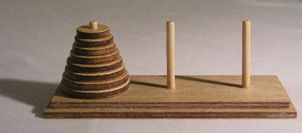
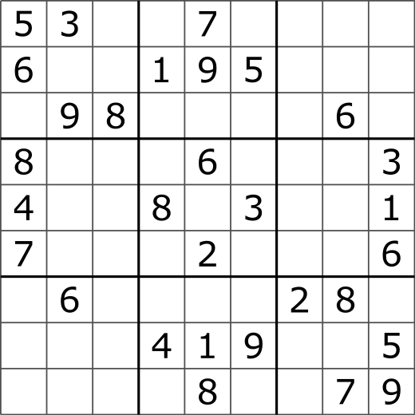

Introduction
In this lecture, we introduce twenty different exercises. Each exercise asks one to develop a particular algorithm, that can be written in ThyMopani/Python. As a suggestion, first, try to solve the algorithm without any additional help. In case of issues or difficulties, try to google for possible approaches to solve it, and recreate a particular solution for answering the exercise. Of course, feel free to test any algorithm in Python to be sure it is working as expected. Finally, share your solution on the course mailing list.
Exercise 1
Write the algorithm def is_odd(int_number) in Python that takes an integer number as input and returns True if the number is odd, False otherwise.
Exercise 2
Write the algorithm def floor_division(dividend, divisor) that takes the dividend and the divisor as input and returns the division between the two and returns only the integer part of the division, without considering the fractional part. For instance, will return 2, as well as . Note that it is not possible to use the Python built-in operator // in the algorithm implementation.
Exercise 3
Write the algorithm def find_max(number_collection) that takes a collection (a list, a set, etc.) of numbers as input and returns the greatest number it contains.
Exercise 4
Write the algorithm def find_min(number_collection) that takes a collection (a list, a set, etc.) of numbers as input and returns the lowest number it contains.
Exercise 5
Write the algorithm def prime_factorization(int_number) that takes an integer number as input and returns its prime factorization, i.e. a dictionary specifying as keys the prime factor numbers of the input integer and as keys how many times that prime number is actually used in the factorization. For instance, the prime factorization of the number 60 is , thus resulting in the following dictionary: {5: 1, 3: 1, 2: 2}.
Exercise 6
Write the algorithm def is_palindromic(word) that takes a word as input and returns True if it is a palindrome, False otherwise. For instance, anna
and madam
are both palindromic words.
Exercise 7
Write the algorithm def longest_common_substring(s1, s2) that takes two strings as input and returns a new string which is the longest common substring contained in both the input strings. For instance, specifying the strings "this is new, guys!" and "it is new, fellows!" as input, the algorithm should return the string " is new, ". If no common substring exists, the empty string "" is returned.
Exercise 8
Write the algorithm def levenshtein_distance(s1, s2) that takes two strings as input and returns the minimum number of edit operations on characters that are needed to transform the first string into the second one. For instance, considering the strings "house" and "home", the algorithm should return 2: substitute the character u with the character m (first operation: "house" -> "homse"), and remove the character s (second operation: "homse" -> "home").
Exercise 9
Write the algorithm def fibonacci_search(item, ordered_list, start, end) that takes an item, an ordered list, a starting position and an ending position as input and returns the position the item in the list if it is included between the start and end position specified. It is a particular adaptation of the binary search, where the list is actually divided into two parts that have sizes that are consecutive Fibonacci numbers – thus, the difficult part is to calculate the middle position, while the search process will follow the same rules of the binary search. Note that the length n of the list on which to find the item should be a Fibonacci number, i.e. . If n is not a Fibonacci number, then let be the smallest number in the Fibonacci sequence that is greater than n. That m is used for determining how to recursively call the algorithm of the two parts of the list.
For instance, if we have to find a book in a list of 19 book titles, m will be set to 8 (since ), and an ancillary index mid (identifying the position of the middle element) is obtained by using the Fibonacci number at m - 1
Exercise 10
Write the algorithm def breadth_first_search(item, input_tree) that takes an item to search (e.g. a name) and a node in a tree where each node contains a value, returns the node where the item is stored. The search on the tree starts from the root. At a given node, the algorithm checks if any of its children refers to the item we are looking for. In this case, the algorithm returns the child containing the item, otherwise, it repeats the same operation for all its child nodes, from the left-most to the right-most. The order in which the nodes are visited is shown in .

Exercise 11
Write the algorithm def depth_first_search(item, node) that takes an item to search (e.g. a name) and a node in a tree where each node contains a value, and returns the node where the item is stored. The search on the tree starts from the root. At a given node, the algorithm checks if any of its children that has not been visited yet (from the left-most to the right-most) refers to the item we are looking for. In this case, the algorithm returns the child containing the item, otherwise, it repeats the same operation for the next non-visited child. The order in which the nodes are visited is shown in .

Exercise 12
Write the algorithm def bubble_sort(input_list) that takes an unordered list as input and returns it ordered. The idea behind the bubble sort is the following one: at every step of the algorithm, it compares a pair of adjacent items. If they are in the right order, analyses the next pair directly, otherwise it swaps them before analysing the following pair. The algorithm stops after having compared all the pairs in the list twice, so as to be sure that all of them have been put in the right position.
Exercise 13
Write the algorithm def bubble_sort_efficient(input_list), which is similar to the previous one, but it actually stops if no swaps are possible at a certain iteration.
Exercise 14
Write the algorithm def selection_sort(input_list) that takes an unordered list as input and returns it ordered. The selection sort works in the following way: it splits the list into two sublists, i.e. that one having the item already sorted (on the left, initially empty) and the one with the items in the wrong position (on the right). Every iteration, it looks for the smallest item in the part of the unsorted sublist and swaps it with the left-most unsorted element.
Exercise 15
Write the algorithm def activity_selector(input_dict) that takes a dictionary of activities – i.e. { "activity1": { "start": "2017-12-25T09:34:55", "end": "2017-12-26T16:14:01" }, ... } – as input and returns the list of the maximum number of activities that can be performed by someone assuming that it cannot work on more than one activity at a particular time.
Exercise 16
Write the algorithm def weighted_activity_selector(input_dict) that takes a dictionary of activities – i.e. { "activity1": { "start": "2017-12-25T09:34:55", "end": "2017-12-26T16:14:01", "weight": 7 }, ... } – as input and returns the list of the number of activities that can be performed by someone assuming that it cannot work on more than one activity at a particular time. In addition, the sum of all the weights of the selected activities must be maximum (i.e. is the highest possible).
Exercise 17
Write the algorithm def solve_hanoi(stack1, stack2, stack3) that takes three stacks as input depicting the Tower of Hanoi puzzle, shown in , and that returns the solution to the puzzle.

The goal of this solitaire is to recreate the same tower initially put the first rod in the third one, by following three simple rules:
-
at every iteration, only one disk can be moved;
-
a move allows one to take a disk from a stack and place it in another one;
-
no disk may be placed on top of a smaller disk.
Exercise 18
Write the algorithm def solve_sudoku(dict_of_cells, last_move=None) that takes as input a dictionary of cells – e.g. { (0, 0): None, (1, 0): 5, ... }, each defining a particular cell in a sudoku 9x9 board –, the last move done, and returns the solution to the puzzle. It is worth mentioning that each key in the dictionary identifies a particular cell in terms of x-y positions defined as tuples (from (0, 0) to (8, 8)), and the value associated with each key is either a number (from 1 to 9) or None if no number is specified. A possible initial state of the sudoku board is introduced in .

The rules of the game are pretty simple: each number can only occur once in each row, column, and 3x3 box indicated in by means of bolder borders.
Exercise 19
Write the algorithm def solve_knights_tour(dict_of_cells, last_move=None) that takes as input a dictionary of cells – e.g. { (0, 0): False, (1, 0): False, ... }, each defining a particular cell in a chess 5x5 board –, the last move done, and returns the solution to the puzzle. It is worth mentioning that each key in the dictionary identifies a particular cell in terms of x-y positions defined as tuples (from (0, 0) to (4, 4)), and the value associated with each key is either True if the cell has been previously occupied by the knight or False otherwise. In particular, starting from the centre cell of the 5x5 board (i.e. (2, 2), initially set to True), the algorithm should find the moves that allow the knight to visit every cell only once. It is worth mentioning that the knight moves to a cell that is two cell away horizontally and one cell vertically, or two cells vertically and one cell horizontally.
Exercise 20
Write the algorithm def shortest_path(input_graph, start_node, end_node), that takes a undirected and weighted graph (i.e. each edge has a cost for being traversed), a start node (e.g. a city), and an end node (e.g. another city) in input, and returns the optimal list of edges (e.g. the roads that one should take) that must traversed for reaching the end node from the start one with the minimal sum of the weights.